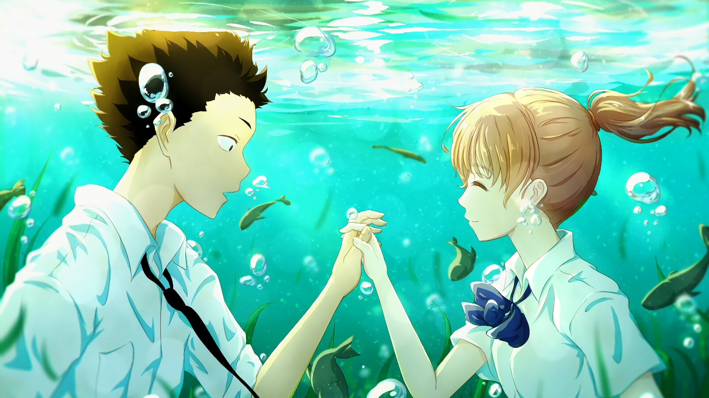
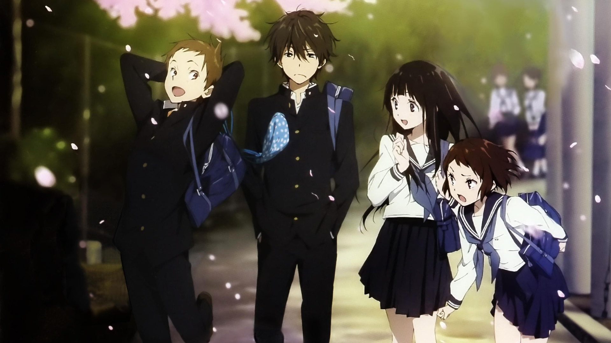

Anime World
-
1.Your Name
Mitsuha Miyamizu, a high school girl, yearns to live the life of a boy in the bustling city of Tokyo—a dream that stands in stark contrast to her present life in the countryside. Meanwhile in the city, Taki Tachibana lives a busy life as a high school student while juggling his part-time job and hopes for a future in architecture. One day, Mitsuha awakens in a room that is not her own and suddenly finds herself living the dream life in Tokyo—but in Taki's body! Elsewhere, Taki finds himself living Mitsuha's life in the humble countryside. In pursuit of an answer to this strange phenomenon, they begin to search for one another. Kimi no Na wa. revolves around Mitsuha and Taki's actions, which begin to have a dramatic impact on each other's lives, weaving them into a fabric held together by fate and circumstance.

-
2.A Silent Voice
As a wild youth, elementary school student Shouya Ishida sought to beat boredom in the cruelest ways. When the deaf Shouko Nishimiya transfers into his class, Shouya and the rest of his class thoughtlessly bully her for fun. However, when her mother notifies the school, he is singled out and blamed for everything done to her. With Shouko transferring out of the school, Shouya is left at the mercy of his classmates. He is heartlessly ostracized all throughout elementary and middle school, while teachers turn a blind eye. Now in his third year of high school, Shouya is still plagued by his wrongdoings as a young boy. Sincerely regretting his past actions, he sets out on a journey of redemption: to meet Shouko once more and make amends. Koe no Katachi tells the heartwarming tale of Shouya's reunion with Shouko and his honest attempts to redeem himself, all while being continually haunted by the shadows of his past.
 -
3.Black Clover
Asta and Yuno were abandoned at the same church on the same day. Raised together as children, they came to know of the "Wizard King"—a title given to the strongest mage in the kingdom—and promised that they would compete against each other for the position of the next Wizard King. However, as they grew up, the stark difference between them became evident. While Yuno is able to wield magic with amazing power and control, Asta cannot use magic at all and desperately tries to awaken his powers by training physically. When they reach the age of 15, Yuno is bestowed a spectacular Grimoire with a four-leaf clover, while Asta receives nothing. However, soon after, Yuno is attacked by a person named Lebuty, whose main purpose is to obtain Yuno's Grimoire. Asta tries to fight Lebuty, but he is outmatched. Though without hope and on the brink of defeat, he finds the strength to continue when he hears Yuno's voice. Unleashing his inner emotions in a rage, Asta receives a five-leaf clover Grimoire, a "Black Clover" giving him enough power to defeat Lebuty. A few days later, the two friends head out into the world, both seeking the same goal—to become the Wizard King!
-
4.Hyouka
Energy-conservative high school student Houtarou Oreki ends up with more than he bargained for when he signs up for the Classics Club at his sister's behest—especially when he realizes how deep-rooted the club's history really is. Begrudgingly, Oreki is dragged into an investigation concerning the 45-year-old mystery that surrounds the club room. Accompanied by his fellow club members, the knowledgeable Satoshi Fukube, the stern but benign Mayaka Ibara, and the ever-curious Eru Chitanda, Oreki must combat deadlines and lack of information with resourcefulness and hidden talent, in order to not only find the truth buried beneath the dust of works created years before them, but of other small side cases as well. Based on the award-winning Koten-bu light novel series, and directed by Yasuhiro Takemoto of Suzumiya Haruhi no Shoushitsu, Hyouka shows that normal life can be full of small mysteries, be it family history, a student film, or even the withered flowers that make up a ghost story.
 -
5.Your Lie in April
Music accompanies the path of the human metronome, the prodigious pianist Kousei Arima. But after the passing of his mother, Saki Arima, Kousei falls into a downward spiral, rendering him unable to hear the sound of his own piano. Two years later, Kousei still avoids the piano, leaving behind his admirers and rivals, and lives a colorless life alongside his friends Tsubaki Sawabe and Ryouta Watari. However, everything changes when he meets a beautiful violinist, Kaori Miyazono, who stirs up his world and sets him on a journey to face music again. Based on the manga series of the same name, Shigatsu wa Kimi no Uso approaches the story of Kousei's recovery as he discovers that music is more than playing each note perfectly, and a single melody can bring in the fresh spring air of April.